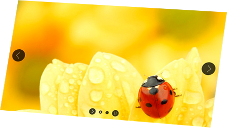
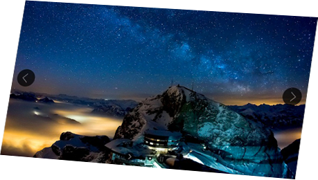
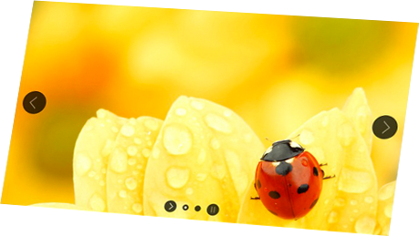
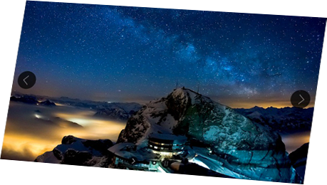
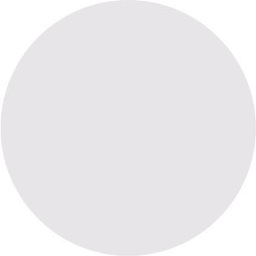
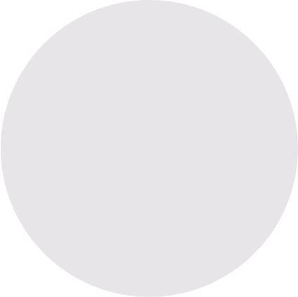

 

{kind=link}
200+ slide transitions
- Try all transitions!
you can scroll
in this box
You can try out many of the available transitions in real-time! Just select a transition from the list and see how the slider animates.
13 skins
- Select the skin!
- Skin selector
- V5 Skin
- Borderless Light Skin
- Borderless Dark Skin
- Borderless Light 3D Skin
- Borderless Dark 3D Skin
- Light Skin
- Dark Skin
- Glass Skin
- Carousel Skin
- Default Skin
- Minimal Skin
- Full Width Skin
- Full Width Dark Skin
You can easily customize these skins or if you need, your can create your own skin as well! (Skins PSD file is included in the package.)
3 navigation types
You can select from three navigation types! These can be used with any skins and you can set the size of the thumbnails as well.
LayerSlider responsive demo slider
This is a well configured demo slider with a lot of image and text layers and also an embedded video. In this slider we are using many new transitions like skew or rotate layers in 3D. Move your mouse over the bullets and the thumbnails will shown. Try to select another skin or navigation type or explore the awesome transitions! Please move the mouse over the third slide and you will see a fancy real-time parallax effect!
Check out all demos & examples
Why choose LayerSlider
LayerSlider is a premium multi-purpose slider for creating image galleries, content sliders, and mind-blowing slideshows with must-see effects. It uses cutting edge technologies to provide the smoothest experience that’s possible, and it comes with more than 200 preset 2D and 3D slide transitions. It’s device friendly by supporting responsive mode, multiple layouts, touch gestures on mobile devices, and uses techniques like lazy load for optimal performance. You can add any content, including images, text, custom HTML, YouTube and Vimeo videos or HTML5 self-hosted multimedia contents. It’s also SEO friendly by allowing you to build semantic markup with custom attributes that search engines can index easily. LayerSlider comes with 13 built-in skins, and it has tons of options to entirely customize the appearance and behavior of your sliders at the smallest detail.
Testimonials
"Dudes, your newest update to Layerslider is freakin awesome!"
"You guys rock, and this last update is completely kick-ass!"
"It is by far the most sophisticated and cool thing I've seen in wordpress."
"The best plugin I ever purchased! Rated to 5 stars!"
"Incredible transitions and features!"
"Guys, you are fantastic! You created the most user friendly slider I ever used!"
Feature list of LayerSlider jQuery Plugin
General Features
- Super smooth hardware accelerated CSS3 transitions with jQuery fallback
- Fully responsive & multiple layouts support
- High compatibility with many fallback features for old browsers
- Lazy loading images for better performance
- Unlimited number of layers with image, video, audio, text or custom HTML content
- Powerful API for more customization
- SEO friendly
- Multiple sliders can be added on the same page
- Included free slide transition gallery
- Very detailed documentation with examples
- Unlimited variations of usage (image slider, image slider with text, content slider, video gallery slider, mixed content slider, banner rotator, carousel, etc.)
- Free updates & support
Slide Options
- More than 200 2D & 3D transitions
- Option for create your own slide transitions
- Option for linking the whole slide
- Option for adding a deep link to a specified slide
Layer Options
- Layers can slide (axis free), fade, rotate (in 2D or 3D), scale and skew, or a mixture of these
- Option for setting the transform origin of transition
- Option for linking layers
- Option for adding a link to layers which will change the slider to a specific slide
- Optional parallax effect on layers
Compatibility
- Requires jQuery 1.8 or newer. Working with both 1.10.x or 2.x versions. Please note that jQuery 2.x is no longer compatible with IE7 and 8.
- Requires the Greensock Animation Platform
- Working in Chrome, Firefox, Safari, IE7-11, Opera
- Working in mobile browsers
- Most of the 2D slide transitons are working under all browsers.
- The 3D slide transitions are working under Chrome, Firefox, Safari, Opera, iOS and the latest Android versions (2D fallback mode under other browsers).
Slider Layout & Appearance
- Responsive, full-width, full size or fixed dimensions layout
- Responsive under & Layers container features for full-width sliders
- 13 skins included
- Skins PSD file included for easily creating your own skins
- Option for specifying a global background color or image to the slider
Slideshow
- Auto-start slideshow (can be disabled)
- Pause slideshow on hover feature
- Starting with specified slide
- Optional random slideshow feature
- Option to fade in the first slide without animating the layers
- Option for backwards-slideshow (Two way slideshow)
- Looping feature
Navigation
- Bullets, hover thumbnails or thumbnails
- Touch navigation on mobile browsers
- Keyboard navigation
- Option for disabling prev / next buttons or bullets
- Option for showing prev / next buttons or bullets on hover
- Two types of timers: bar timer and circle timer
- Option for customizing the thumbnail area and the size of thumbnails
Video & Audio
- Easy to use with YouTube, Vimeo or HTML5 videos or audios
- Auto-pause slideshow while videos or audios are playing
- Auto-play videos and audios (optional)
- YouTube and Vimeo thumbnail images
YourLogo
- Option for adding a fixed image over the slider
- Option for styling and adding a link to this image